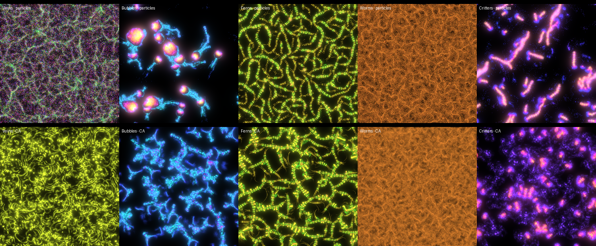
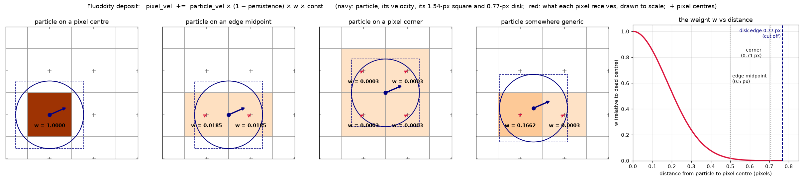
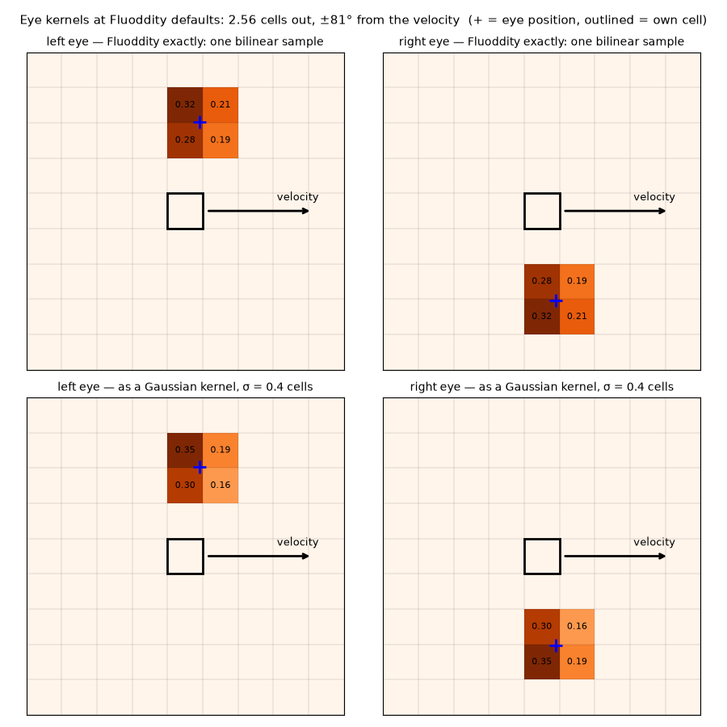
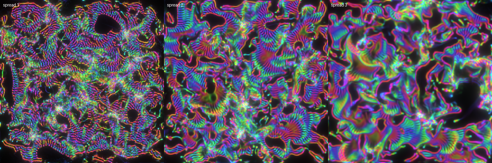
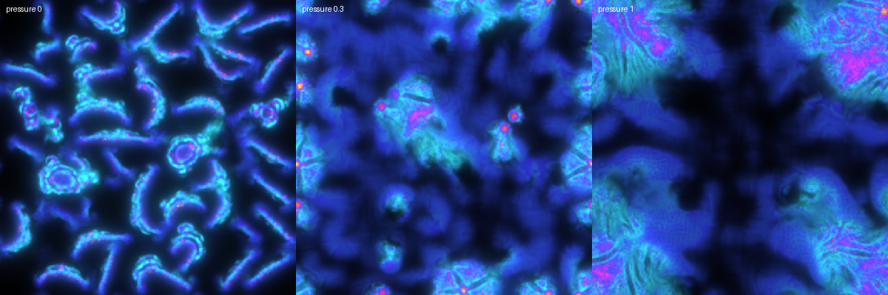
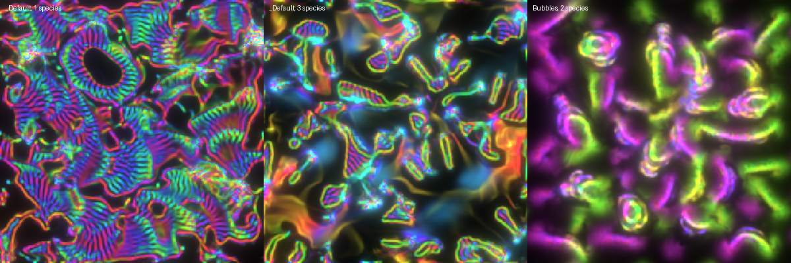
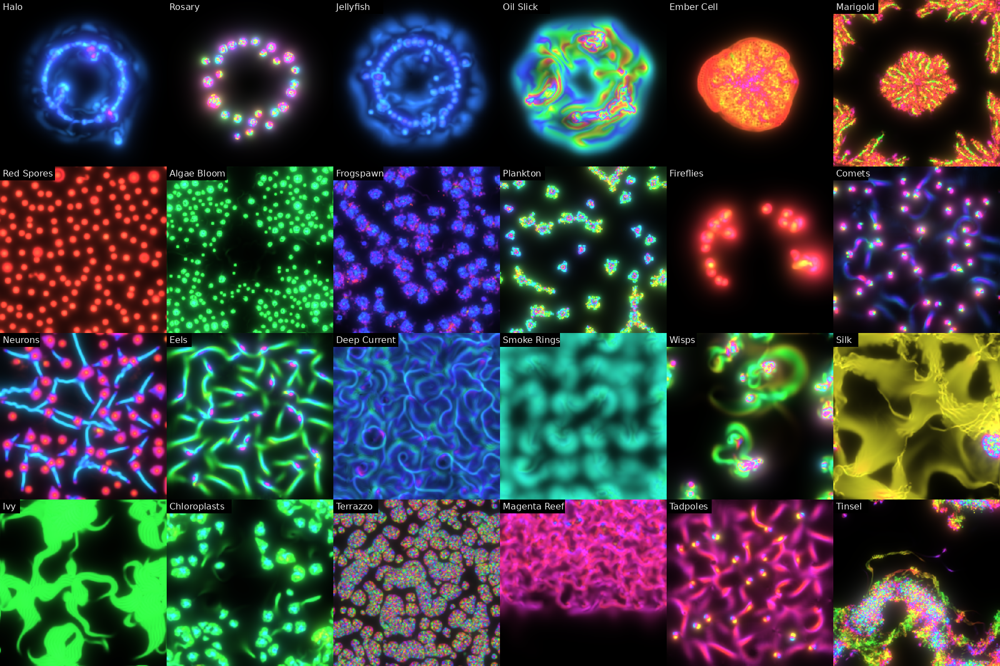
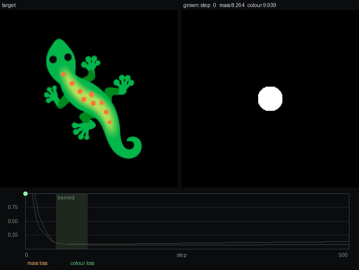
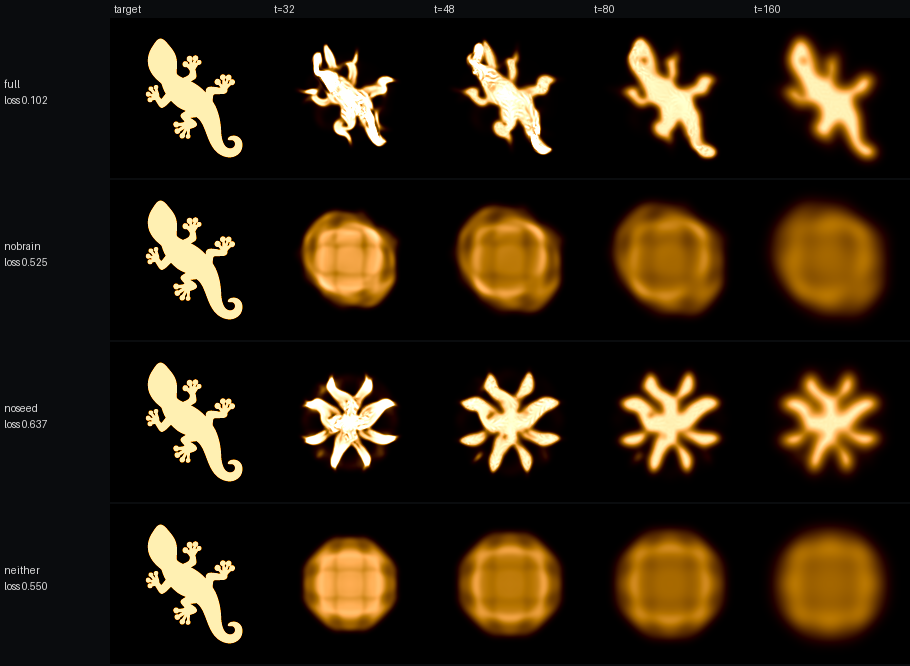

A physarum-like particle system rebuilt as a cellular automaton: mass and velocity per cell, no particles.
Open the simulator → Watch the trained gecko → source

Fluoddity, by aphid91, generalises Sage Jenson's physarum model. Particles never sense each other. They only read a trail that everyone writes, and that trail holds velocity, not density, so opposite flows cancel. How a particle reacts to what it reads is decided by a small Fourier "brain" with 80 parameters, shared by its cohort.
Grid: float[H, W, 2] # trail: net flow (x, y) per pixel, faded and blurred
Particle:
pos: vec2 # state
vel: vec2 # state; its direction is the heading
brain: Brain # shared by its cohort: 4 numbers in, 4 out
Globals: drag, strafe_power, sensor_angle, sensor_dist, sensor_gain, persistence, diffusion
step():
for p in particles:
fwd = normalize(p.vel)
L = local(sample(grid, p.pos + rot(+angle)·fwd·dist), fwd) # (along, across)
R = local(sample(grid, p.pos + rot(-angle)·fwd·dist), fwd)
out = brain(L, R) + mirror(brain(mirror(R), mirror(L))) # no left/right bias
force, strafe = to_world(out[0:2]), to_world(out[2:4])
p.vel = p.vel * drag + force
p.pos = p.pos + p.vel + strafe * strafe_power # strafe: a hop, never stored
grid = blur(grid) * persistence
for p in particles:
grid[p.pos] += p.vel * (1 - persistence) # a sharp 1-4 pixel splatΣ ampᵢ · [sin φ, cos φ, sin 2φ, cos 2φ] with φ = freqᵢ·x + offsetᵢ.(v.along, −v.across). Running the brain again in the mirrored world and adding the result means particles turn left as readily as right.
Each step of the conversion kept Fluoddity's constants, so the two run the same presets.
float[H,W,2], as in Fluoddity.float[H,W,2] (the "particle" of that cohort living in each cell) and a mass float[H,W,1], counted in particles.sensor_distance cells out, at ±sensor_angle·π from the cell's velocity. Each is one bilinear tap, which is close to a σ ≈ 0.4 Gaussian. Projected onto the velocity and its perpendicular, they give the brain's four inputs.

vel = vel·drag + force.cell + vel + strafe·strafe_power, split by overlap over the cells there. The new velocity is momentum ÷ mass. This is advection by reintegration tracking, and it conserves mass exactly.trail += mass · vel · (1 − persistence) · 7.07, where 7.07 is Fluoddity's average splat per particle.Spread: the box that carries the mass can be wider than one cell. Wider means softer and more liquid.

Pressure: mass above a rest level pushes down its own gradient. At 0 it is exactly the original model.

Species: a cohort can be its own field, with its own mass, velocity and brain. Species never see each other directly. They meet in the shared trail, which all of them write to and read from, and, with pressure on, in the crowding.

A novelty search started from Fluoddity's presets with random spread, pressure and brain choice, and mutated them slowly. It scored candidates on 13 measured features and threw out dead, static and exploding runs. 24 of its 194 candidates are the CA family in the simulator.

The CA's step written in PyTorch is differentiable, so it can be trained by gradient descent: a disc of mass on a 256² grid is fitted to grow the gecko at its native 128 px. The faithful 80-number brain reaches the silhouette. Letting the eyes see mass holds the shape longer, and six hidden channels give the cleanest fit.
| variant | loss | what grows |
|---|---|---|
| faithful brain | 0.140 | a gecko at steps 48–80 that blurs afterwards |
| + sees mass | 0.133 | a clear gecko that holds to step 160 |
| + 6 hidden channels | 0.098 | a clean silhouette, stable to step 160 |
| launch velocity frozen | 0.443 | an 8-armed star |

Training with a sample pool, a one-cell move and a pixel-level loss term made the shape stable. The mass loss is 0.083 at step 96 and 0.131 at step 500, against 0.100 and 0.238 before. Colour comes from three channels carried along with the mass, trained on top, with a colour loss of 0.07. It doesn't yet have the red spots, toes or crisp edges.
Watch the trained gecko → The same model running live in your browser (WebGL2), step for step as in training.
Neither part draws the gecko alone. The brain with a symmetric launch grows a star, and the learned launch without the brain smears into a blob. The rule is symmetric, so the launch velocity is the hint that gives the animal a front.
